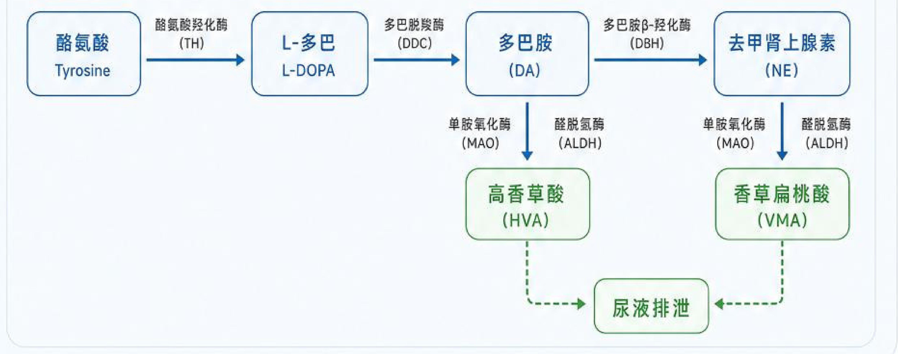

四、代谢产物与神经递质平衡
儿茶酚胺代谢效率评估
指标分析
高香草酸（HVA）和香草扁桃酸（VMA）是多巴胺、去甲肾上腺素等儿茶酚胺类神经递质在体内代谢后的主要终产物，其水平可反映儿茶酚胺的代谢效率及神经递质平衡状态。
高香草酸（HVA）
116.80nmol/L 参考范围：< 182 nmol/L香草扁桃酸（VMA）
96.38nmol/L 参考范围：< 101 nmol/L结果解读
HVA 和 VMA 水平均在参考范围内，提示儿茶酚胺代谢效率良好，神经递质代谢平衡，有助于维持情绪稳定和心理健康。
儿茶酚胺代谢途径图
